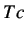
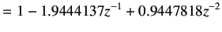
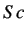
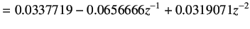
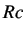
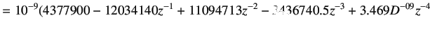
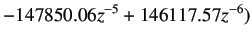
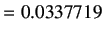

Next: Implementing 2DOF pole-placement controller Up: PRBS Modeling and Implementation Previous: Determination of Second order
For deriving the Two degrees of freedom control law, please refer to the chapter 6.2 The controller was designed for the given transient conditions, rise time = 10 sec, overshoot = 0.1. The experimental result and performance of the controller for setpoint temperature change from 38.00 to 43.00 degree C, i.e. 5 degree C positive step change, has been shown below in Fig 7.10. The controller designed is not derived for the model explained in earlier sections.
The parameters for the 2-DOF pole-placement controller obtained are shown here
|  |  | |
|  |  | |
|  |  | |
|  | ||
|  |
As can be observed from the graph of temperature vs. time (third subplot) in Fig 7.10, the overshoot criteria was satisfied very easily. The rise time criteria is observed to be more than 30 sec. This can be satisfied with experimentation. The paramenters are computed by the file twodof_para.sce.
The steps to be followed to conduct PRBS test experiment virtually remains same as explained in section 1.1. only for the following differences
rokade 2017-04-23